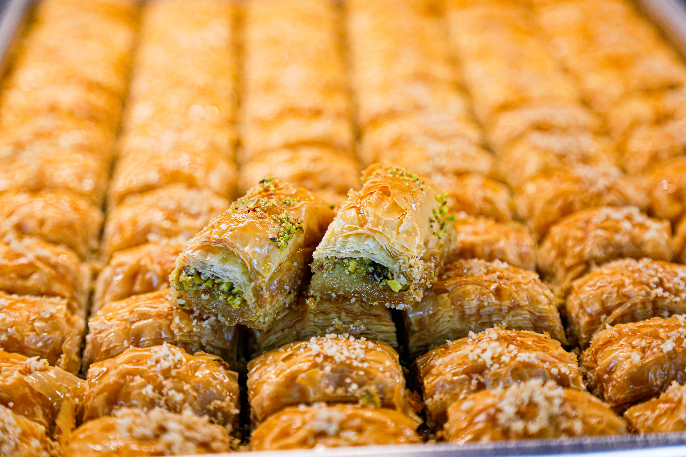

Baklava

Classic Honey Sweetened Greek Baklava
You will love this classic Greek Dish, Baklava. It is the perfect combination of sweet, gooey, flakey and delicious. This is a perfect gift for a neighbor or something to bring to a family gathering. Everyone will love this amazing dish.
Ingredients
- 1 16oz package phyllo dough
- 1 pound chopped nuts
- 1 cup butter
- 1 teaspoon ground cinnamon
- 1 cup water
- 1 cup white sugar
- 1 teaspoon vanilla extract
- 1/2 cup honey
Steps
- Gather all ingredients
- Preheat the oven to 350 degrees F(175 degrees C). Butter the bottoms and sides of a 9x13-inch pan.
- Chop nuts and toss with cinnamon. Set aside.
Unroll phyllo dough. Cut whole stack in half to fit pan. Cover phyllo with a dampened cloth to keep from drying out Unroll phyllo dough. Cut whole stack in half to fit pan. Cover phyllo with a dampened cloth to keep from drying out as you work. Place two sheets of dough in pan, butter thoroughly. Repeat until you have 8 sheets layered.as you work. Place two sheets of dough in pan, butter thoroughly. Repeat until you have 8 sheets layered.
- Unroll phyllo dough. Cut whole stack in half to fit pan. Cover phyllo with a dampened cloth to keep from drying out as you Unroll phyllo dough. Cut whole stack in half to fit pan. Cover phyllo with a dampened cloth to keep from drying out as you work. Place two sheets of dough in pan, butter thoroughly. Repeat until you have 8 sheets layered.work. Place two sheets of dough in pan, butter thoroughly. Repeat until you have 8 sheets layered.
- Sprinkle 2 to 3 tablespoons of nut mixture on top. Top with two sheets of dough, butter, nuts, layering as you go. The top layer should be about 6 to 8 sheets deep.
- Sprinkle 2 to 3 tablespoons of nut mixture on top. Top with two sheets of dough, butter, nuts, layering as you go. The top layer should be about 6 to 8 sheets deep.
- Make sauce while baklava is baking. Boil sugar and water until sugar is melted. Add vanilla and honey. Simmer for about 20 minutes.
- Remove baklava from the oven and immediately spoon sauce over it. Let cool.
- Serve in cupcake papers. This freezes well. Leave it uncovered as it gets soggy if it is wrapped up.
- Enjoy!